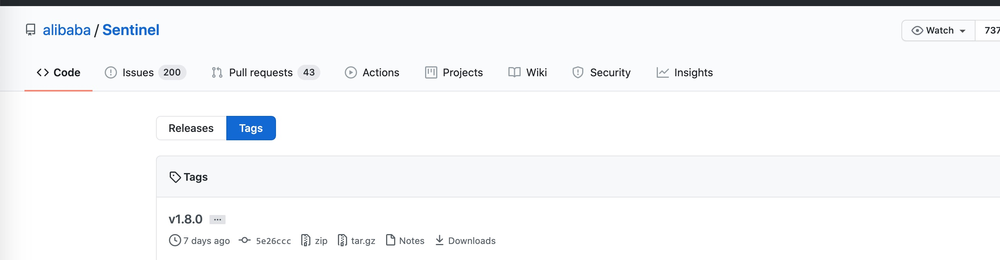
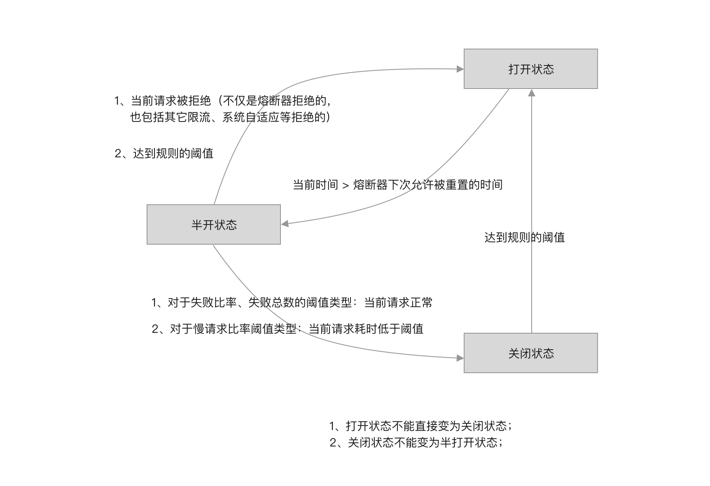
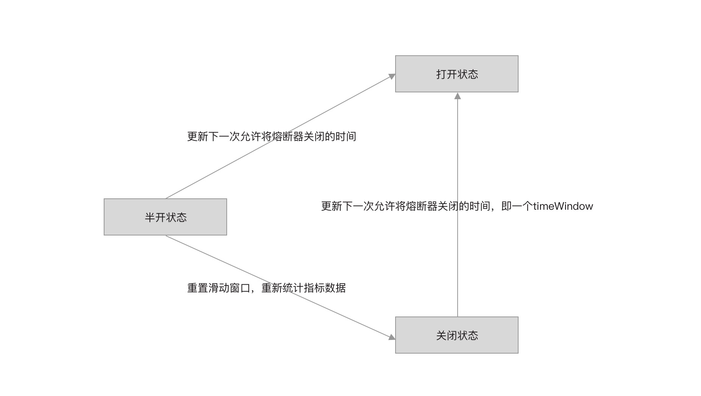

- 01 开篇词：一次服务雪崩问题排查经历.md.html
- 02 为什么需要服务降级以及常见的几种降级方式.md.html
- 03 为什么选择 Sentinel，Sentinel 与 Hystrix 的对比.md.html
- 04 Sentinel 基于滑动窗口的实时指标数据统计.md.html
- 05 Sentinel 的一些概念与核心类介绍.md.html
- 06 Sentinel 中的责任链模式与 Sentinel 的整体工作流程.md.html
- 07 Java SPI 及 SPI 在 Sentinel 中的应用.md.html
- 08 资源指标数据统计的实现全解析（上）.md.html
- 09 资源指标数据统计的实现全解析（下）.md.html
- 10 限流降级与流量效果控制器（上）.md.html
- 11 限流降级与流量效果控制器（中）.md.html
- 12 限流降级与流量效果控制器（下）.md.html
- 13 熔断降级与系统自适应限流.md.html
- 14 黑白名单限流与热点参数限流.md.html
- 15 自定义 ProcessorSlot 实现开关降级.md.html
- 16 Sentinel 动态数据源：规则动态配置.md.html
- 17 Sentinel 主流框架适配.md.html
- 18 Sentinel 集群限流的实现（上）.md.html
- 19 Sentinel 集群限流的实现（下）.md.html
- 20 结束语：Sentinel 对应用的性能影响如何？.md.html
- 21 番外篇：Sentinel 1.8.0 熔断降级新特性解读.md.html
21 番外篇：Sentinel 1.8.0 熔断降级新特性解读
在本专栏写作完成之际，笔者看到阿里官方推出了 Sentinel 1.8.0 版本，该版本发布时间为 2020/08/20。

与此同时，官方文档也更新了关于熔断降级的介绍。
从官方文档来看，该版本的最大亮点是对熔断降级功能进行了重构。旧版本的熔断降级功能对慢调用并不友好，而新版本改善了这个问题。
在微服务项目中，一个微服务常常需要调用内部其它服务的接口，即便是单体架构项目，也免不了会调用一些第三方 API、访问数据库，使用熔断降级功能可以有效避免外部因素导致服务自身不可用甚至进程挂掉的情况发生。也许我们项目并不需要限流，但熔断机制却是微服务项目不可或缺的降级方式。所以笔者决定，为专栏添加一篇文章，介绍新版本的熔断降级。
笔者在得知 Sentinel 更新 1.8.0 版本的第一时间就看了熔断降级重构后的源码，从源码对比新旧版本细节上的差异。
熔断降级低版本存在的不足
1.7.x 版本支持三种熔断降级策略为：
- DEGRADE_GRADE_RT：按平均响应耗时
- DEGRADE_GRADE_EXCEPTION_RATIO；按失败比率
- DEGRADE_GRADE_EXCEPTION_COUNT；失败次数
按平均响应耗时
按平均响应耗时，只支持统计时长为一秒钟，在接口耗时较长场景下导致统计的请求较为稀疏，熔断效果不佳。例如调用第三方支付接口，我们实际项目中统计平均耗时超过 1 秒。
在旧版本中，当选择 DEGRADE_GRADE_RT 策略时，阈值为平均响应耗时，如果一秒内的平均响应耗时超过规则配置的阈值，当连续 rtSlowRequestAmount 个请求之后，平均耗时依然超过阈值，则触发熔断，这导致平均响应耗时策略容易受某个特别慢的请求影响。
如某接口调用平均耗时正常为 100ms，熔断阈值为 500ms，假设一秒内 10 个请求，有一个请求耗时超过 10 秒，就会将平均响应耗时上升到 1100ms，后续需要很多个请求的耗时为 100ms 才能将平均耗时降下来，很容易就超过 rtSlowRequestAmount，导致熔断降级，这样的影响非常致命。
按失败比率
按失败比率，只支持统计时长为一秒钟，与按平均响应耗时一样，不适用于慢调用场景。
按失败次数
按失败次数，只支持统计时长为一分钟，即便 timeWindow 配置为 1 秒，在 timeWindow 秒之后关闭开关，开关也会立即被打开，所以大部分场景都使用不上，使其成为一个摆设功能。
熔断降级新特性
1.8.0 版本使用的熔断策略（CircuitBreakerStrategy）：
- SLOW_REQUEST_RATIO：按慢请求比率
- ERROR_RATIO：按失败比率
- ERROR_COUNT：按失败次数
DegradeRule 类可配置字段如下：
public class DegradeRule extends AbstractRule {
private int grade;
private double count;
private int timeWindow;
private int minRequestAmount;
private double slowRatioThreshold = 1.0d;
private int statIntervalMs = 1000;
}
与旧版本的不同：
- grade：熔断策略，取值为 CircuitBreakerStrategy，并与旧版本取值兼容
- timeWindow：窗口时间，熔断器从打开状态到关闭状态的最小间隔时间
- slowRatioThreshold：慢请求比率，当熔断策略为 SLOW_REQUEST_RATIO 时使用
- statIntervalMs：统计时长，滑动窗口的周期，单位毫秒，这是一个只有一个 bucket 的滑动窗口
新版本支持三种熔断策略可自定义统计时长
DegradeRule 的 statIntervalMs 字段用于指定指标数据统计时长，单位为毫秒，默认值为 1000。
例如某接口平均耗时为 1 秒，则统计时长可配置为 10 秒，通过延长统计时长，将稀疏请求调整为“密集”请求。
对原有秒级平均响应耗时策略升级，改为慢调用比率策略
由旧版本的按平均响应耗时策略改为按慢请求比率策略，统计慢请求数，使用慢请求数与总请求数的比值与阈值比较。
当熔断策略为 SLOW_REQUEST_RATIO 时：
- DegradeRule 的 count 表示慢请求阈值，只有响应耗时超出 count 的请求才记为慢请求。是否慢请求取决于当前请求的响应耗时，与平均耗时没有关系。
- DegradeRule 的 slowRatioThreshold 表示慢请求比率阈值，决定是否打开熔断器的阈值。
引入半开启自动恢复支持，并提供熔断器事件监听器
1.8.0 版本开始，Sentinel 使用熔断器实现熔断降级功能，每个熔断降级规则对应生成一个熔断器，为熔断器引入半开启状态，并可注册自定义事件监听器以感知熔断器的状态变化。
熔断器有三种状态：开启状态、半开启状态和关闭状态。
- 当熔断器状态为半开启状态时，直接拒绝请求；
- 当熔断器为关闭状态时，请求被允许通过；
- 当熔断器状态为开启状态时，根据 timeWindow 尝试将开关状态改为半闭合，如何修改成功，则允许当前请求通过。
熔断器的状态改变有点类似于线程的状态改变，因此笔者将熔断器的改变条件绘制成下图。

一开始熔断器的状态为关闭状态，在达到熔断降级规则的阈值时，熔断器的状态从关闭变为开启状态。
熔断器不能直接从开启状态变为关闭状态，只能处在半开启状态的熔断器才能关闭。当熔断器从关闭状态变为开启状态的时间与当前时间的间隔超过 timeWindow 时，尝试将熔断器变为半开启状态。
熔断器可以从半开启状态变为关闭状态，也可以从半开启状态变为开启状态。
触发熔断器从半开启状态变为开启状态的时机有两个：
- 达到规则配置的阈值时开启熔断器，例如慢请求比率达到阈值
- 当前请求被其它地方拒绝时开启熔断器，例如同一资源配置多个熔断器时，有其它规则的熔断器拒绝了请求，又例如被限流器限流
处理半开启状态的熔断器，只要当前请求调用正常，即可关闭：
- 当熔断策略为按失败比率或者失败次数时，只要当前请求正常即可关闭熔断器
- 当熔断策略为按慢请求比率时，只要当前请求不是慢请求即可关闭熔断器
在状态改变的过程中会通知监听器，同时也会修改一些数据，如下图所示。

熔断器状态从关闭到开启：更新下一次允许将熔断器关闭的时间，即间隔 timeWindow 秒之后才可以将熔断器关闭。
熔断器状态从半开启状态到打开状态：更新下一次允许熔断器关闭的时间。如果熔断器刚从开启状态变为半开状态，此时想尝试关闭却发现又达到阈值了，那么就恢复为开启状态，并延长 timeWindow 之后再重试关闭。
熔断器状态从半开启状态到关闭状态：重置当前时间窗口的 bucket，由于只有一个 bucket，所以是重置整个滑动窗口。重置统计的指标数据是避免熔断器刚关闭又立即进入开启状态。
总结
从新旧版本对比也能看出，新版本对熔断降级功能的改动很大。特别是加入了半开启自动恢复支持，旧版本需要通过定时器来重置熔断状态，而新版中引入熔断器和三种状态，巧妙的实现了熔断器自动开启和自动关闭的功能。
虽然我们没有分析源码，但这却是笔者看了源码之后总结出来的，如果你想要了解源码，看完本篇后再去看源码，你的思路会清晰很多。建议看完源码之后看下这个 Issue：
了解为什么当请求被其它地方拒绝时或者被其他熔断器拒绝时将熔断器打开。关于半开启自动恢复的介绍：
如果你们项目也使用了 Sentinel 的熔断降级功能，笔者强烈推荐你们升级一下 Sentinel 版本，以获取更好的熔断降级效果。